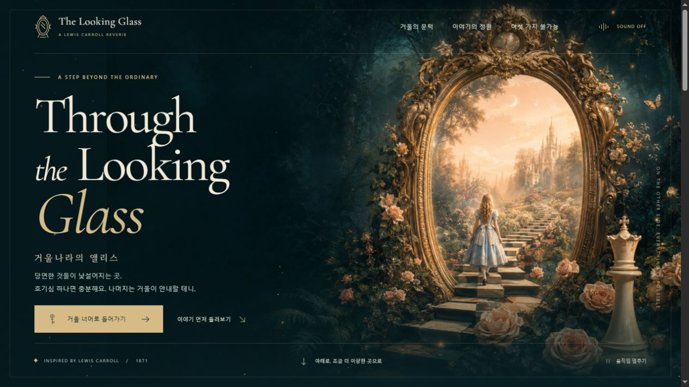
직접 열어보기GPT-6 Astra
일러스트 · 사운드 · 이야기 창
숲속의 금빛 거울을 중심으로 그림과 타이포그래피를 배치했습니다. 이야기 창, 배경음, 움직임을 멈추는 기능을 함께 담았습니다.
MEMBER EXPERIMENT
모델을 바꾸면,
화면은 얼마나 달라질까?
“상상할 수 있는 가장 아름다운 HTML 파일을 만들어 보세요.”
같은 요청을 여러 모델에 던지고, 한 번에 나온 결과를 모았습니다. 화면 구성부터 움직임과 작은 상호작용까지 직접 비교해보세요.
THROUGH THE LOOKING-GLASS
‘거울나라의 앨리스’를 주제로 공통 프롬프트를 사용한 열 모델의 결과입니다. 첫 화면을 나란히 보고, 궁금한 페이지를 열어 스크롤하거나 버튼을 눌러보세요. 새로 추가한 Opus 5.5와 GPT-6 Sol은 걸린 시간과 토큰을 잰 벤치 보고서도 함께 남겼습니다.
모델 체급순으로, 같은 체급 안에서는 최신 모델부터 놓았습니다. 이미지는 배포된 페이지의 실제 화면이며, 결과 페이지와 보고서는 새 탭으로 열립니다.

직접 열어보기일러스트 · 사운드 · 이야기 창
숲속의 금빛 거울을 중심으로 그림과 타이포그래피를 배치했습니다. 이야기 창, 배경음, 움직임을 멈추는 기능을 함께 담았습니다.
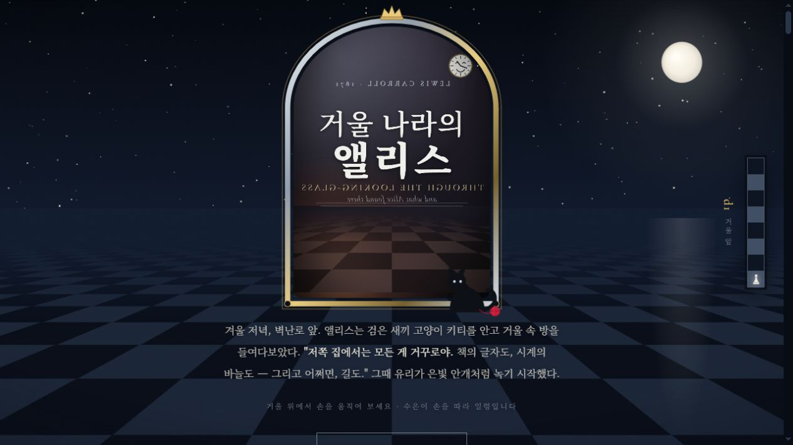
직접 열어보기거울 효과 · 여덟 칸의 여정
수은처럼 일렁이는 거울에서 시작해 체스판의 여덟 칸을 따라갑니다. 달리기, 사라지는 이름, 단어 놀이를 스크롤과 버튼에 담았습니다.
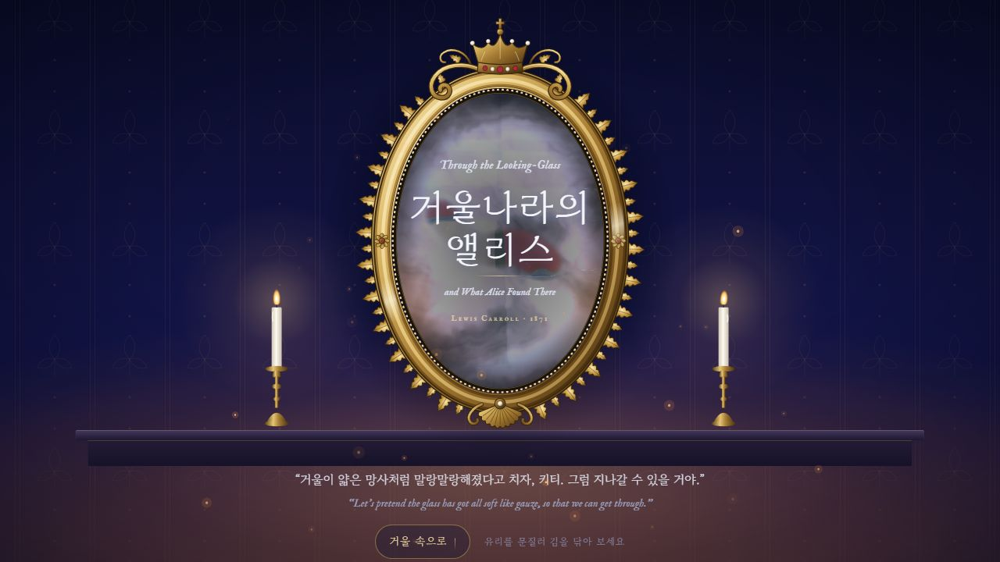
직접 열어보기김 서린 거울 · 체스판 여정 · 손거울
김 서린 거울을 커서로 문지르면 너머의 체스판 나라가 비칩니다. 스크롤을 따라 한 칸씩 전진해 여왕이 되고, 손거울을 대어 거꾸로 쓰인 재버워키를 읽을 수 있습니다.
벤치 보고서 · 70분 21초 (새 탭)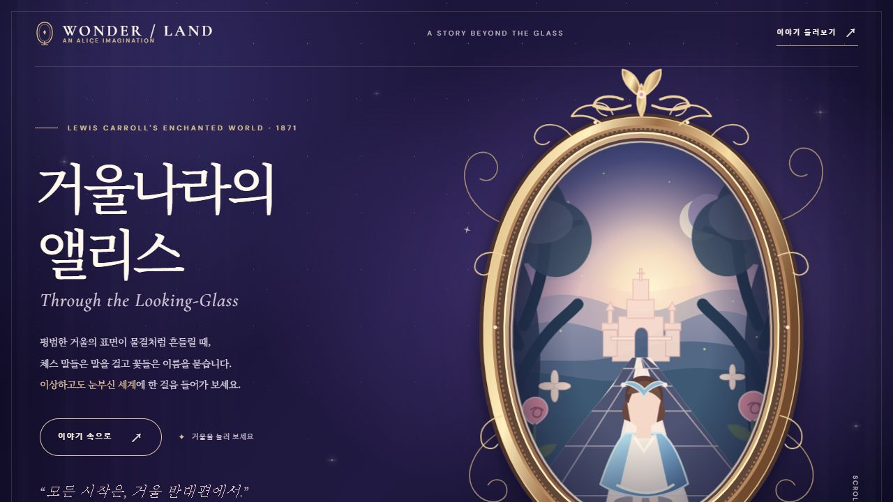
직접 열어보기SVG 일러스트 · 거울 전환 · 세 장면
금빛 거울과 체스판 정원을 SVG 그림으로 그렸습니다. 거울을 누르면 세계의 색과 문구가 바뀌고, 말하는 꽃과 체스 말, 왕관의 세 장면으로 이어집니다.
벤치 보고서 · 11분 46초 (새 탭)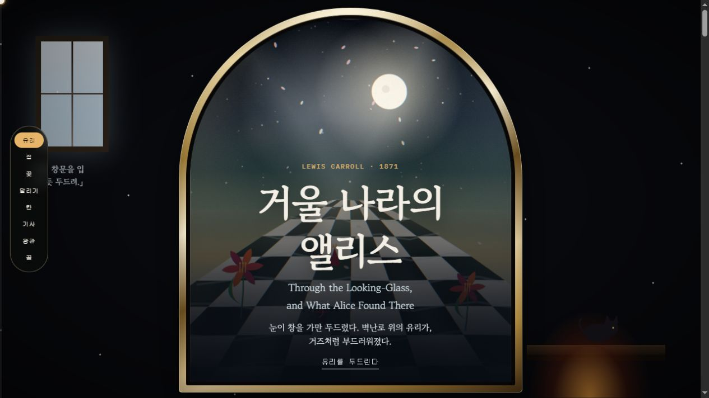
직접 열어보기유리 두드리기 · 말하는 꽃 · 꿈의 선택
아치형 거울의 유리를 두드리며 이야기를 시작합니다. 꽃의 대사를 살펴보고, 시를 거울에 비춰 읽고, 마지막에는 누구의 꿈이었는지 선택할 수 있습니다.
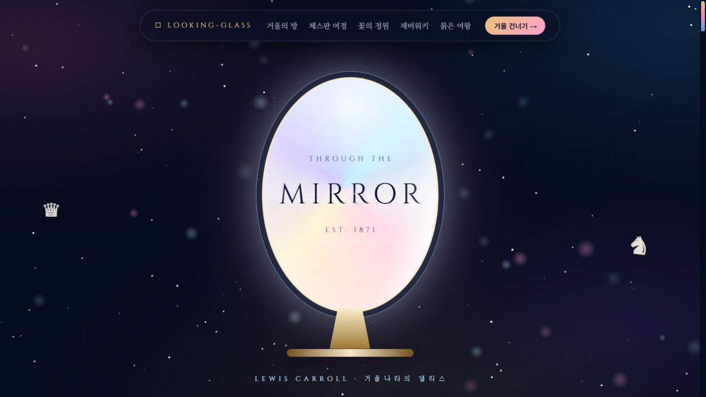
직접 열어보기빛나는 거울 · 체스판 · 거울 모드
빛나는 타원형 거울에서 체스판 여정과 꽃의 정원으로 이어집니다. 거울 모드를 바꾸고 붉은 여왕의 달리기를 직접 눌러볼 수 있습니다.
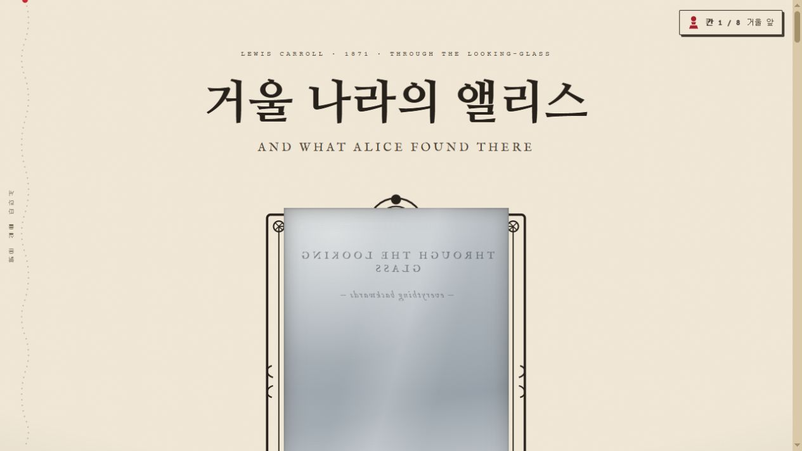
직접 열어보기종이 질감 · 붉은 실
종이빛 바탕에 붉은 실로 진행을 표시합니다. 말하는 꽃, 이름이 사라지는 숲, 거울 곤충 등 이야기의 장면을 이어갑니다.
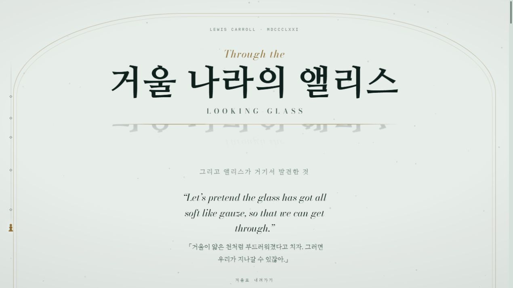
직접 열어보기활자 · 반사 · 체스 수순
큰 활자와 반사 효과로 문을 열고, 거울에 비추는 시와 체스 수순으로 이야기를 풀어냅니다. 수를 넘기거나 자동으로 진행할 수 있습니다.
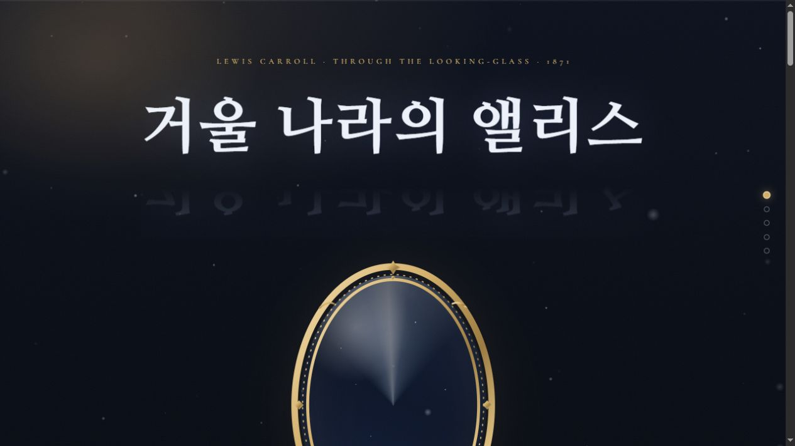
직접 열어보기반사된 활자 · 수은의 문 · 체스판
겨울 응접실의 금빛 거울과 반사된 제목에서 시작합니다. 스크롤을 따라 체스판과 거울 나라로 이동하고, 거꾸로 놓인 재버워키를 펼쳐 읽을 수 있습니다.
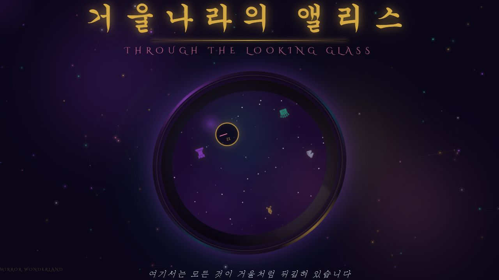
직접 열어보기한 화면 · 입자 · 마우스 반응
원형 거울과 떠다니는 체스 기물을 한 화면에 모았습니다. 마우스 움직임과 클릭에 반응하는 효과를 살펴볼 수 있습니다.
BENCHMARK LOG
Opus 5.5와 GPT-6 Sol은 결과 페이지를 완성한 뒤 작업 로그를 읽어 벤치 보고서를 따로 만들었습니다. 기억이 아닌 기록으로, 한 번의 요청에 걸린 시간과 처리한 토큰을 옮겼습니다.
| 항목 | Opus 5.5 | GPT-6 Sol |
|---|---|---|
| 작업 도구 | Claude Code추론 강도 xhigh | Codex추론 강도 xhigh |
| 소요 시간 | 70분 21초 | 11분 46초 |
| 누적 처리 토큰 | 41,212,402 | 2,179,937 |
| 입력 중 캐시 | 98.5% | 95.6% |
| 출력 토큰 | 415,722사고 270,050 포함 | 34,261추론 9,724 포함 |
| 결과 HTML | 172,286바이트2,489줄 | 45,896바이트447줄 |
| 브라우저 검증 | 동작 241회문제 12건 수정 | 화면 너비 5가지페이지 오류 0건 |
| 보고서 | 열어보기 Opus 5.5 벤치 보고서 (새 탭) | 열어보기 GPT-6 Sol 벤치 보고서 (새 탭) |
두 모델은 작업 도구와 토큰 집계 방식이 달라 숫자를 그대로 견주기는 어렵습니다. 누적 처리 토큰은 호출할 때마다 다시 읽은 대화까지 모두 더한 값이라, 새로 쓴 글의 양이나 실제 청구 비용과 다릅니다. 소요 시간에는 브라우저로 확인하고 고친 시간도 들어 있습니다.
MORE EXPERIMENTS
GLM 5.3 Flash에서는 프롬프트의 주제를 ‘살바도르 달리’로 바꾸거나, 아예 주제를 정하지 않았습니다. 나머지 요청은 그대로 두고 각각 한 번에 나온 결과입니다.
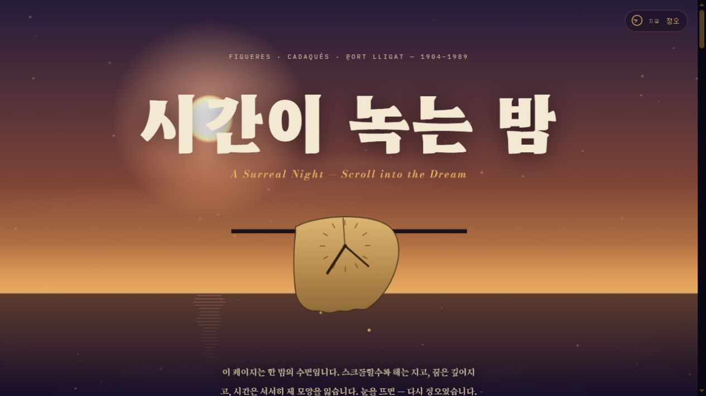
직접 열어보기GLM 5.3 Flash · 주제: 살바도르 달리
스크롤하며 밤과 꿈으로 들어가는 페이지입니다. 녹는 시계와 초현실적인 장면을 따라 화면의 시간과 분위기가 변합니다.
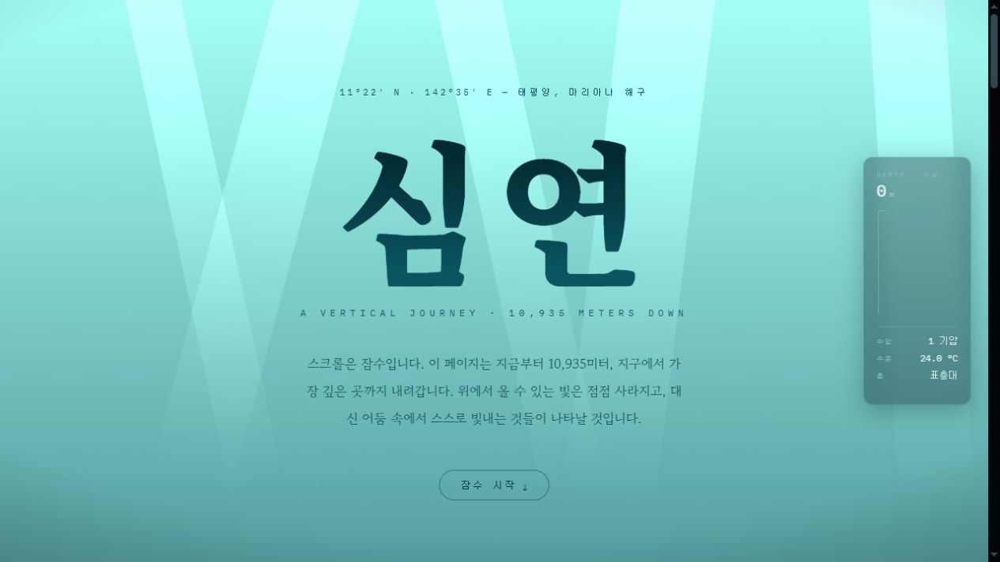
직접 열어보기GLM 5.3 Flash · 주제 지정 없이 생성
스크롤을 잠수에 빗댄 페이지입니다. 수심 표시를 따라 아래로 내려가며 빛과 배경, 바다의 장면이 달라지는 구성을 살펴볼 수 있습니다.
EXPERIMENT NOTES
결과물마다 한 번의 요청을 사용했습니다. 앨리스 비교에 사용한 공통 프롬프트는 아래와 같습니다.
"거울나라의 앨리스"를 주제로 상상할 수 있는 가장 아름다운 HTML 파일을 만들어 보세요. 보는 사람들이 "와!!!"라는 감탄사밖에 나오지 않을 만한 파일이어야 합니다. 시각적으로 인상적이고 아름다우며 눈을 즐겁게 하는 파일이어야 합니다. 꼼꼼하게 작업하되 창의력을 발휘하세요.
추가 실험 중 ‘시간이 녹는 밤’은 주제를 ‘살바도르 달리’로 바꿨고, ‘심연’은 주제를 지정하지 않았습니다. 심해라는 소재도 모델이 선택한 결과입니다.
| 모델 | 소요 시간 | 기준 |
|---|---|---|
| GPT-6 Astra | 약 20분 | 기억 |
| Fable 5.1 | 약 1시간 10분 | 기억 |
| Opus 5.5 | 70분 21초 | 로그 계측 |
| GPT-6 Sol | 11분 46초 | 로그 계측 |
| Grok 4.7 | 약 30분 | 기억 |
| Muse Spark 1.3 | 10분 내외 | 기억 |
| GLM 5.3 | 약 30분 | 기억 |
| GLM 5.3 Flash | 10분 내외 | 기억 |
| Opus 5 | 약 1시간 | 기억 |
| MiMo 2.6 Flash | 20분 | 기억 |
| Ling 3.0 Flash | 50초 미만 | 기억 |
기억에 따른 값은 정확한 계측값이 아니고, 로그로 잰 값도 한 번 실행한 기록일 뿐 반복 측정 결과는 아닙니다. 소요 시간은 대략적인 참고값으로 보고, 화면과 인터랙션을 직접 살펴보세요.
같은 소재에서 무엇을 앞에 놓았을까요? 글자, 색, 그림, 여백을 비교해보세요.
마우스를 움직이고, 스크롤하고, 버튼을 눌렀을 때 어떤 반응이 생길까요?
첫인상이 마지막 장면까지 이어질까요? 창 크기를 바꿔보면 또 어떨까요?
HELLO, HUMAN
같은 궁금증으로 직접 돌려보고, 나온 결과를 함께 구경합니다.
완성된 서비스도, 이런 비교 실험도 헬로우 휴먼의 작업물입니다.